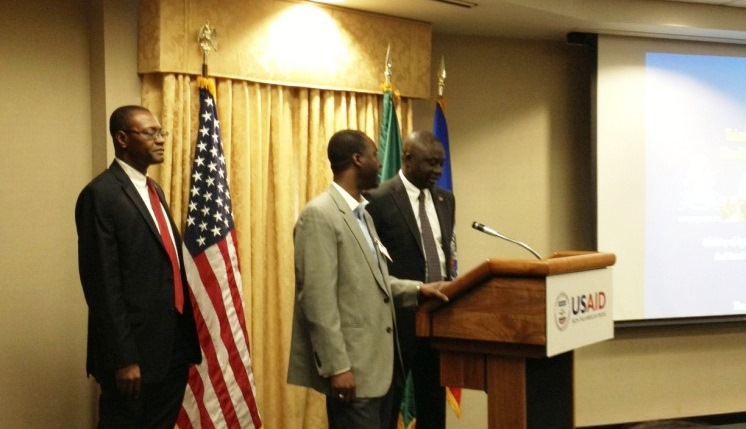

Haiti Pap Peri!
It means Haiti will not perish. And it marked the end of a presentation of the “Triennial Agriculture Recovery Plan 2013-2016” by Haiti’s Minister of Agriculture and Rural Development (MARNDR), Thomas Jacques and his cabinet. The presentation was held at USAID headquarters in Washington, DC. on March 4, and was attended by NGOs, multi-laterals (World Bank and IADB), and other donors.
One overall objective governs this three-year strategy: sustainable job creation. Four components have been designed to meet that objective:
- Strengthening commercial agriculture, by promoting enterprises and cooperatives and adopting advanced agricultural practices;
- Supporting small farmers, by applying best practices and monitoring the nutritional status of families;
- Developing rural infrastructure and watersheds, by passing legislation for improved management of irrigated areas, monitoring soil conservation and constructing or rehabilitating hydro-agricultural facilities;
- Institutional reform of the MARNDR, through training and access to rural credit.
Rather than go into the details of these programs, I wanted to talk about the main points I drew out of Minister’s presentation.
1. Coordination with other actors
Minister Jacques emphasized the need to partner and work together with the private and public sectors, with donors. He particularly stressed the importance of donors coordinating with other donors. The wealth of development initiatives in Haiti and rooms many actors on the ground means that a coordinated approach involving all relevant parties is the only way to have sustainable impact.

2. Role of the private sector
Minister Jacques also stressed the importance of the private sector and private investments in agriculture. The Ministry, he added, will “step back” and provide regulatory oversight as well as strategic incentives to attract the private sector. To this end, the presentation niftily included two pages of “opportunities” or advantages to investing in the Haitian agriculture sector, listing such things as diversity of agro-ecological systems, increasing internal demand for agricultural products, and favorable commercial agreements. He also added that a Unit had been created within the Government specifically for the promotion and tracking of private sector investments. The Unit would maintain a dialogue with private sector firms interested in investing in the agriculture sector. I believe this is it.
3. Value chains
Hand in hand with the previous point is the emphasis on value chains. Indeed, private investment in strategic value chains is seen as the means to reach the objective of sustainable job creation. Among those items mentioned on the plant production side were bananas (where Haiti could be a competitive producer), rice, sorghum, legumes, mango, avocado, sugar cane. In terms of animal production: poultry farming, milk and goat meat production, fishing and fish farming.
***
From my point of view at the MIF, it is a hopeful message and a welcome fact that we work or have worked on initiatives in all four strategic components, and that our vision is aligned with the MARNDR.
I look forward to sharing more of our experiences in the Haitian agricultural sector in the coming posts!
In the meantime, here is some information about MIF’s work in the Haitian coffee sector.
Some facts about the Haitian agriculture sector:
- It accounts for 25 percentof the GDP.
- It’s Haiti’s largest employer, hiring 60% of the active workforce and providing employment for over 1 million households.
- It covers 10 geographical departments.